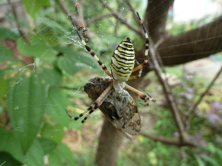
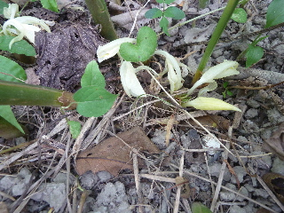
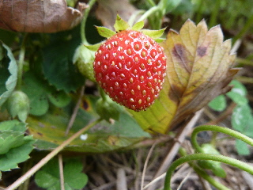
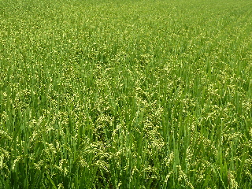

遊びで植物を育てよう
2014/08/02
蝉と蜘
こんなことになるんですね。

セミってなんとなく強い気がしてました。
クモの糸につかまっちゃうんですね。
何日目かな？7日目かな？
【ページTOP】
【8月TOP】
【園芸TOP】
2014/08/02
ミョウガが沢山採れました。
ミョウガの花が咲きだしました。

沢山採ったので、沢山食べないと。
色んな食べ方を調べないと。
【ページTOP】
【8月TOP】
【園芸TOP】
2014/08/02
8月も苺が出来ました。
8月も苺の収獲が出来るとは思っていませんでした。

食べてみた感想は、爽やかな甘さでした。
しっかり赤いのになー。
春の方が美味しい。
旬が一番ですね。
【ページTOP】
【8月TOP】
【園芸TOP】
2014/08/31
今年のお米は安いそうで。
お米が沢山あまっているので、今年のお米は安いそうです。

作っている人は大変。買う人は嬉しいってことになるんでしょうか？
今年が豊作だったら、来年はさらに安くなるのかな？
【ページTOP】
【8月TOP】
【園芸TOP】
過去の日記
【2024年8月の日記】
【2023年8月の日記】
【2022年8月の日記】
【2021年8月の日記】
【2020年8月の日記】
【2019年8月の日記】
【2018年8月の日記】
【2017年8月の日記】
【2016年8月の日記】
【2015年8月の日記】
【2014年8月の日記】
【2013年8月の日記】
【2012年8月の日記】
【ページTOP】
【8月TOP】
【園芸TOP】
畑仕事じゃないよ。
【おいしいものを食べよう。】【たくさん寝よう。】
【ソロ活をしよう!】【季節感のあることをしよう。】【動画視聴はほどほどに。】【当サイトの全てのコンテンツは無断転載禁止です。】